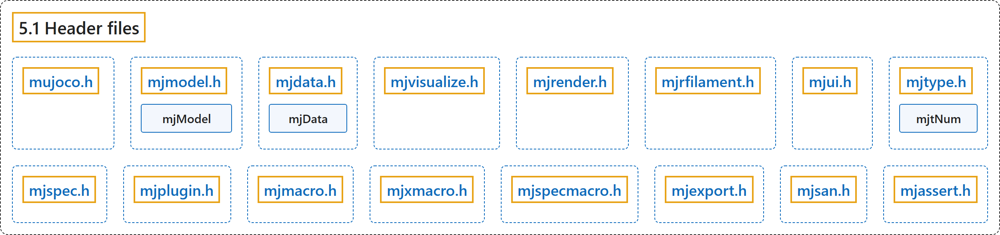

5.1 Header files
Classification

Glossary
| Term | Definition | 中文翻译 | Source |
|---|---|---|---|
| 5.1 Header files 头文件 |
(context) "The distribution contains several header files which are identical on all platforms." | （语境）发行包中包含若干在所有平台上都相同的头文件。 | Google DeepMind, n.d., "Header files", para. 1 |
| mujoco.h 主头文件 mujoco.h |
"This is the main header file and must be included in all programs using MuJoCo." | 这是主头文件，所有使用 MuJoCo 的程序都必须包含它。 | Google DeepMind, n.d., "Header files", item 1 |
| mjmodel.h mjmodel.h 头文件 |
"Defines the C structure mjModel which is the runtime representation of the model being simulated." | 定义C 结构体 mjModel，它是被仿真模型的运行时表示。 | Google DeepMind, n.d., "Header files", item 2 |
| mjModel 模型结构体 mjModel |
"Defines the C structure mjModel which is the runtime representation of the model being simulated." | 定义 C 结构体 mjModel，它是被仿真模型的运行时表示。 | Google DeepMind, n.d., "Header files", item 2 |
| mjdata.h mjdata.h 头文件 |
"Defines the C structure mjData which is the workspace where all computations read their inputs and write their outputs." | 定义C 结构体 mjData，它是所有计算读取输入、写入输出的工作区。 | Google DeepMind, n.d., "Header files", item 3 |
| mjData 数据结构体 mjData |
"Defines the C structure mjData which is the workspace where all computations read their inputs and write their outputs." | 定义 C 结构体 mjData，它是所有计算读取输入、写入输出的工作区。 | Google DeepMind, n.d., "Header files", item 3 |
| mjvisualize.h mjvisualize.h 头文件 |
"Defines the primitive types and structures needed by the abstract visualizer." | 定义抽象可视化器所需的基本类型和结构体。 | Google DeepMind, n.d., "Header files", item 4 |
| mjrender.h mjrender.h 头文件 |
"Defines the primitive types and structures needed by the OpenGL renderer." | 定义OpenGL 渲染器所需的基本类型和结构体。 | Google DeepMind, n.d., "Header files", item 5 |
| mjrfilament.h mjrfilament.h 头文件 |
"Defines the primitive types and structures needed by the filament renderer." | 定义Filament 渲染器所需的基本类型和结构体。 | Google DeepMind, n.d., "Header files", item 6 |
| mjui.h mjui.h 头文件 |
"Defines the primitive types and structures needed by the UI framework." | 定义UI 框架所需的基本类型和结构体。 | Google DeepMind, n.d., "Header files", item 7 |
| mjtype.h mjtype.h 头文件 |
"Defines primitive types and enums, including the mjtNum floating-point type to be either double or float (see mjtNum)." | 定义基本类型和枚举，包括取值为 double 或 float 的浮点类型 mjtNum（见 mjtNum）。 | Google DeepMind, n.d., "Header files", item 8 |
| mjtNum 浮点类型 mjtNum |
"Defines primitive types and enums, including the mjtNum floating-point type to be either double or float (see mjtNum)." | 定义基本类型和枚举，包括取值为 double 或 float 的浮点类型 mjtNum（见 mjtNum）。 | Google DeepMind, n.d., "Header files", item 8 |
| mjspec.h mjspec.h 头文件 |
"Defines enums and structs used for procedural model editing." | 定义程序化模型编辑所用的枚举和结构体。 | Google DeepMind, n.d., "Header files", item 9 |
| mjplugin.h mjplugin.h 头文件 |
"Defines data structures required by engine plugins." | 定义引擎插件所需的数据结构。 | Google DeepMind, n.d., "Header files", item 10 |
| mjmacro.h mjmacro.h 头文件 |
"Defines C macros that are useful in user code." | 定义在用户代码中有用的 C 宏。 | Google DeepMind, n.d., "Header files", item 11 |
| mjxmacro.h mjxmacro.h 头文件 |
"This file is optional and is not included by mujoco.h. It defines X Macros that can automate the mapping of mjModel and mjData into scripting languages, as well as other operations that require accessing all fields of mjModel and mjData." | 此文件是可选的，不被 mujoco.h 包含。它定义了可将 mjModel 和 mjData 自动映射到脚本语言的 X 宏，以及其他需要访问 mjModel 和 mjData 全部字段的操作。 | Google DeepMind, n.d., "Header files", item 12 |
| mjspecmacro.h mjspecmacro.h 头文件 |
"This file is optional and is not included by mujoco.h. It defines X Macros that can automate the mapping of mjSpec and its element structs into scripting languages, as well as other operations that require accessing all fields of mjSpec during procedural model editing." | 此文件是可选的，不被 mujoco.h 包含。它定义了可将 mjSpec 及其元素结构体自动映射到脚本语言的 X 宏，以及程序化模型编辑中其他需要访问 mjSpec 全部字段的操作。 | Google DeepMind, n.d., "Header files", item 13 |
| mjexport.h mjexport.h 头文件 |
"Macros used for exporting public symbols from the MuJoCo library." | 用于从 MuJoCo 库导出公共符号的宏。 | Google DeepMind, n.d., "Header files", item 14 |
| mjsan.h mjsan.h 头文件 |
"Definitions required when building with sanitizer instrumentation." | 使用 sanitizer 插桩构建时所需的定义。 | Google DeepMind, n.d., "Header files", item 15 |
| mjassert.h mjassert.h 头文件 |
"Compile-time size assertions verifying MuJoCo ABI stability across C and C++ compilers." | 编译期的大小断言，用于验证 MuJoCo 的 ABI 在 C 和 C++ 编译器之间的稳定性。 | Google DeepMind, n.d., "Header files", item 16 |
References
Google DeepMind. (n.d.). Programming. MuJoCo Documentation (Version 3.17.0). Retrieved October 31, 2026, from https://mujoco.readthedocs.io/en/stable/programming/index.html